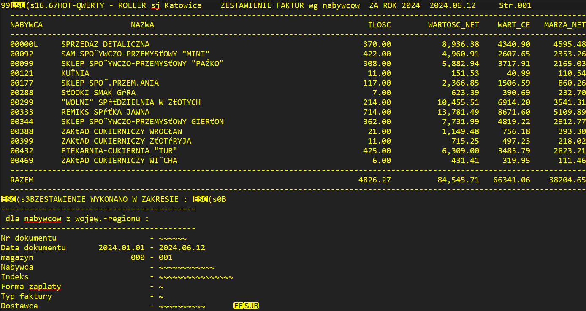
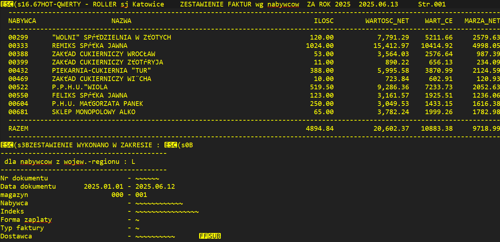
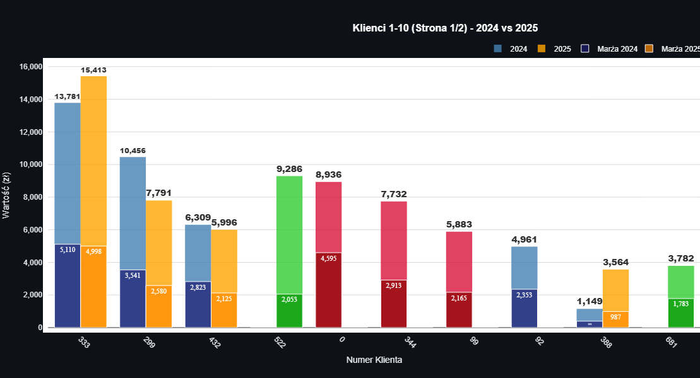
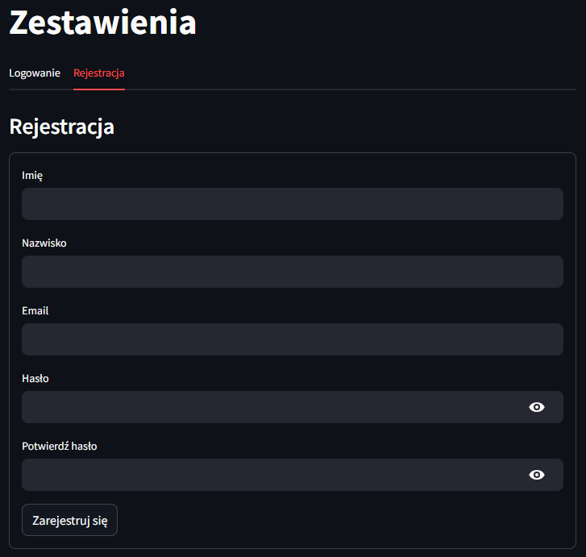
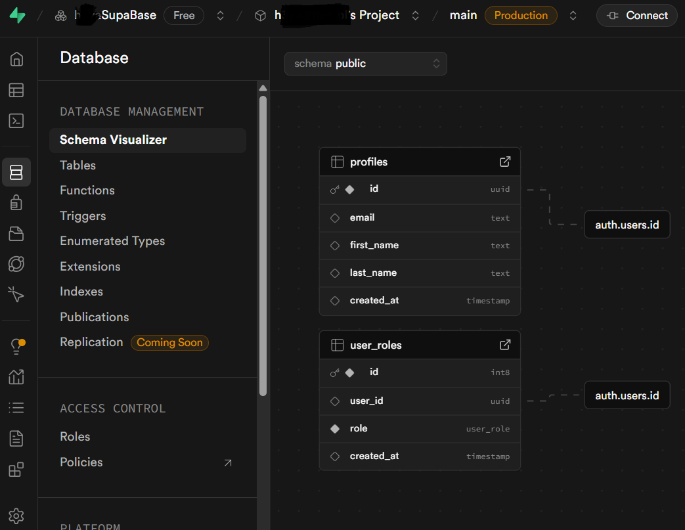

Sales Reports
Interactive sales analysis application built with Streamlit. After files are uploaded by the user, it processes them using tools (Pandas/NumPy) and presents clear statistics and comparative charts (Plotly), enables period filtering and dynamic visualizations of changes in revenue, margin, and customer volume between two uploaded reports. For presentation purposes, it automatically downloads report files (Supabase Storage).
This tool is prepared individually for specific reports that the client receives from their system (text file, without tables, columns, or separators), example:


The result of the application is, for example, the following interactive chart

There is also a user registration and login system (Supabase Authentication), but it is disabled for presentation purposes. Example:


Technologies and Libraries Used
* Python
* Streamlit
* Pandas
* NumPy
* Plotly
* Supabase Storage
* Supabase Auth
* Github